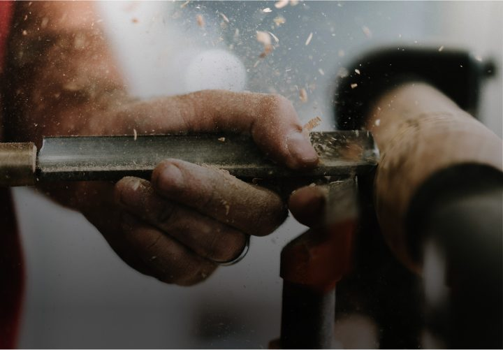

Arbeiten bei DTT.
Ein junges Unternehmen mit erfahrenen Kollegen aus der Torbranche. Wer bei uns anfängt, übernimmt schnell Verantwortung.

Handwerk mit Perspektive.
DTT Deutsche Tor-Technik ist ein junges Unternehmen mit erfahrenen Kollegen aus der Torbranche. Wir wachsen, weil unsere Kunden uns vertrauen, und dafür brauchen wir Menschen, die anpacken können.
Ob beim Aufmaß, bei der Montage oder im Kundenkontakt: Bei uns übernehmen Sie schnell Verantwortung und arbeiten direkt mit dem Endergebnis, nicht nur mit einem Ausschnitt davon.
Profile, die wir laufend suchen.
Passt keine der folgenden Stellen genau zu Ihnen, freuen wir uns trotzdem über Ihre Initiativbewerbung.
Servicetechniker Tore und Antriebe
Sie warten, reparieren und montieren Garagen-, Hof- und Industrietore sowie deren Antriebe direkt bei unseren Kunden vor Ort.
Monteur Garagen- und Industrietore
Sie bauen neue Tore ein, von der Einzelgarage bis zur Industriehalle, und übergeben sie einsatzbereit an unsere Kunden.
Kaufmännische Mitarbeit Vertrieb und Auftragsabwicklung
Sie betreuen Anfragen, erstellen Angebote und sorgen dafür, dass Aufträge reibungslos von der Beratung bis zur Montage laufen.
Darauf können Sie zählen.
Unbefristete Zusammenarbeit
Wir stellen in der Regel unbefristet ein, weil wir auf eine lange Zusammenarbeit setzen.
Firmenfahrzeug für Techniker
Servicetechniker und Monteure erhalten in der Regel ein Firmenfahrzeug für den Einsatz bei unseren Kunden.
Weiterbildung
Neue Materialien, neue Antriebe, neue Vorschriften: Wir halten Sie und uns auf dem laufenden Stand.
Kurze Wege
Als junges Unternehmen entscheiden wir schnell, ohne lange Abstimmungswege.
Regionale Einsätze
Die meisten Einsätze finden in Idstein und im Rhein-Main-Gebiet statt, ohne wochenlange Montagereisen.
Ihr nächster Schritt beginnt mit einer Nachricht.
Rufen Sie an oder schreiben Sie uns, welches Profil zu Ihnen passt.